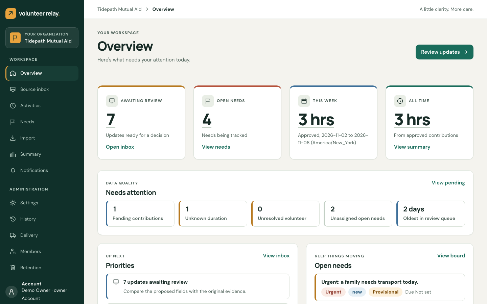
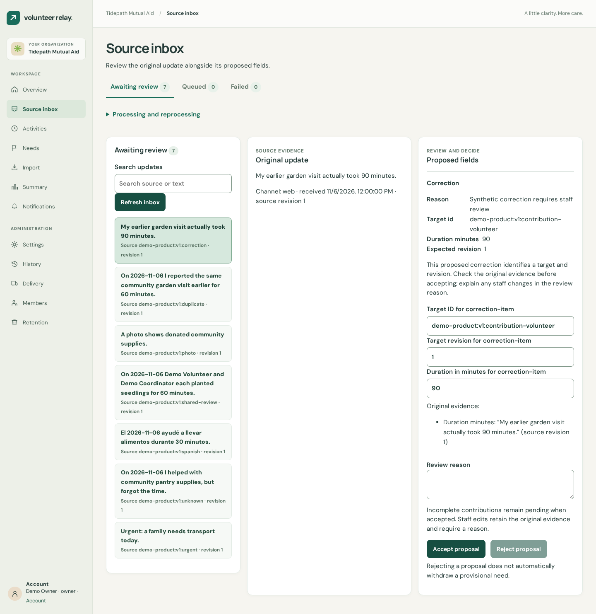
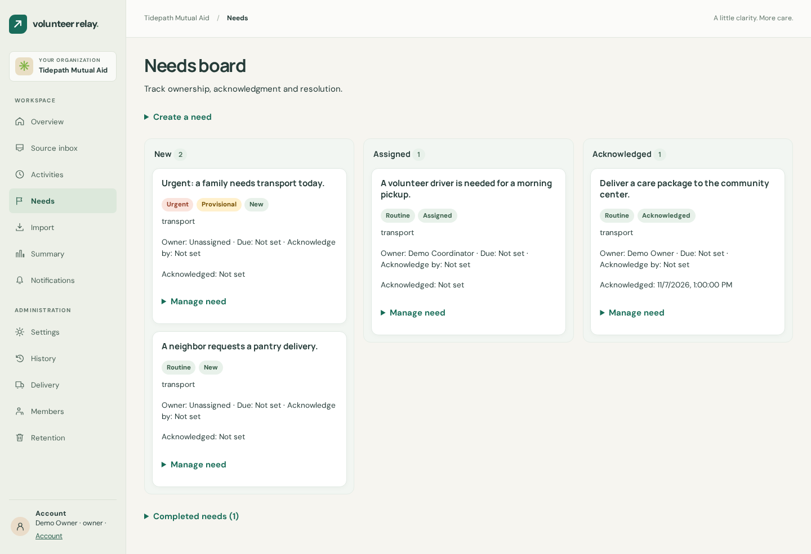
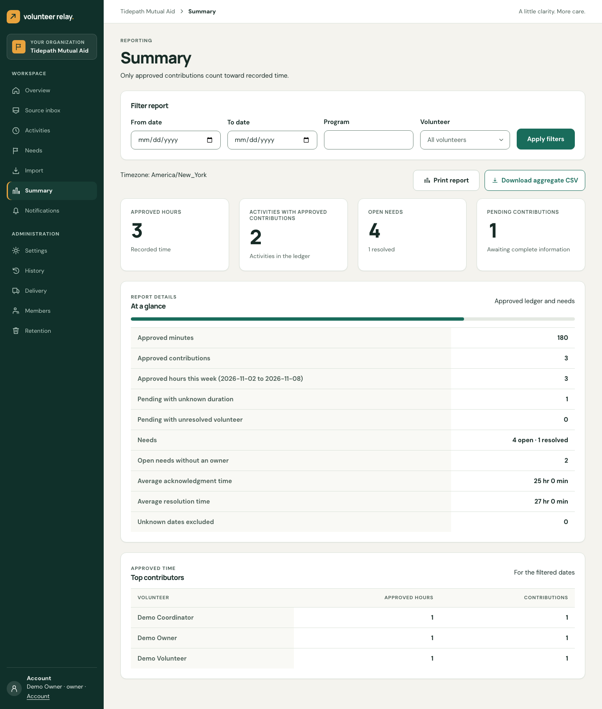
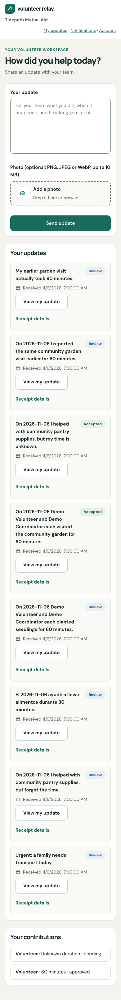

Volunteer operations for nonprofits
Every update counted once.
Every urgent need owned.
Volunteers report in whatever way is easiest — a mobile page, Telegram, or a chat export. Volunteer Relay turns those messages into evidence-backed records, assigns urgent needs to accountable staff, and produces totals a board can trust.

The problem
Volunteer work lives in chat threads. Decisions need more than that.
Hours get double-counted, urgent requests scroll away, and nobody can say where a number came from. Volunteer Relay keeps the messy human input and adds the structure around it.
Hours counted once
Duplicates and corrections are reconciled against earlier reports, so the same visit never inflates the total.
Urgent needs reach a person
Requests are routed to an accountable owner, with acknowledgment deadlines and escalation if no one picks them up.
Totals backed by evidence
Every approved minute links back to the original message or photo, so any number can be explained.
How it works
From a quick message to a defensible report
Volunteers report
Send an update with an optional photo from the web, Telegram, or a staff-imported chat export.
Evidence is preserved
The original text, photo and every revision are stored untouched. Nothing is overwritten.
AI proposes, staff decide
Structured extraction suggests hours, activities and needs. Staff review proposals beside the source, or let validated ones record automatically.
Needs get owners
Needs are assigned, acknowledged and resolved. Approved contributions flow into reports.
Review
Proposals next to the proof
Coordinators see the original message and the proposed fields side by side. Accept, edit with a reason, or reject. Unknown values stay unknown instead of being guessed.
- Source evidence and revisions always visible
- Corrections linked to the record they change
- Per-organization choice: review everything, or auto-record validated updates

Needs board
Nothing urgent falls through
Track every need from new to assigned to acknowledged to resolved. A notification being delivered is never mistaken for a person acknowledging it.
- Owner, due time and acknowledgment deadline tracked separately
- Escalation and reassignment recorded as events
- Routing by category; in-app, Telegram and email alerts

Reporting
Numbers you can stand behind
Reports are built only from approved contributions. Pending, unknown-duration and unresolved items are shown separately — never silently counted as zero.
- Filter by date, program and volunteer
- Aggregate CSV for board readers, without sensitive source text
- Evidence drill-down limited to authorized staff

For volunteers
As easy as sending a message
A simple mobile form asks one question: how did you help today? Volunteers get a receipt, can see their own contributions, and respond to clarification requests.
- Text plus optional photo
- Link Telegram with a short-lived, single-use token
- Volunteers only ever see their own records

Capabilities
Everything a small team needs to run volunteer operations
Multi-channel intake
Web form, Telegram bot, and chat-export imports, with text and photos.
Structured AI extraction
Model output is validated against a schema, versioned, and always reviewable.
Deduplication & corrections
Repeated reports collapse into one activity; later corrections link to the original.
Needs lifecycle
Assign, acknowledge, escalate and resolve, with reasons for cancel and reopen.
Notifications
In-app, Telegram and email delivery with retries and per-recipient state.
Reports & CSV
Totals from the approved ledger, with aggregate export for board readers.
Roles & organizations
Volunteers, coordinators, admins and board readers, across multiple nonprofits.
Audit & retention
Full change history and retention controls with signed ledgers.
Architecture
Simple to run. Safe to replay.
A Next.js web app accepts requests and writes the source evidence together with a work record in one transaction. A separate worker does the slow work, so nothing depends on a request staying open.
Channels
Pipeline
Pluggable adapters
Organization is resolved server-side; membership is rechecked when jobs run.
Jobs tolerate retries and restarts; unique constraints prevent duplicate effects.
Unknown is null, never zero. Reports use approved contributions only.
No face recognition, no URL fetching, no sensitive source text in logs.
Stack: TypeScript · Next.js · PostgreSQL + Drizzle · Better Auth · Tailwind CSS · Docker Compose on a single host. All demo data is synthetic.
A little clarity. More care.
Volunteer Relay is open source under the MIT license. Read the plan, explore the code, or run the demo locally with synthetic data.
Explore on GitHub →